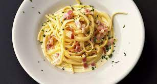

Carbonara
Carbonara

The perfect Carbonara recipe is minutes away
Ingredients
- Pasta
- Bacon
- Sauce
- Parmesan cheese
Recipe
- Prepare all ingredients pasta,bacon,sauce
- Boil water with a little salt
- When water is boiling, add pasta for 10 minutes
- Dice the bacon, fry on medium heat
- Make the sauce
- Combine everything together
- Grate some parmesan cheese, bon apetite!